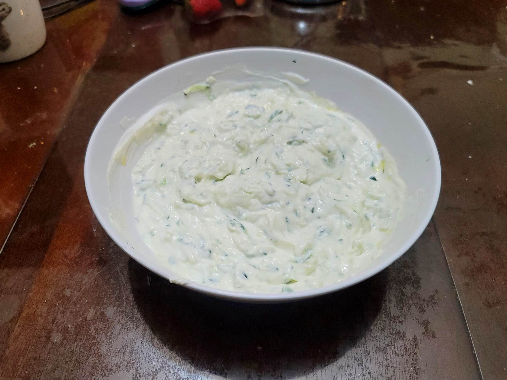

Tzatziki

Ingredients:
- 3/4 English cucumber, partially peeled
- 1 tsp Kosher salt
- 4-5 cloves Garlic, grated
- 1 tsp White vinegar
- 1 tbsp Olive oil
- 2 cups Greek yogurt
- Optional: Mint and/or Dill, fine chopped
- 1/4 tsp White pepper
Instructions:
- Grate the cucumber with a box grater and toss with 1/2 tsp Salt until it starts to release a lot of its liquid. Then transfer to a cheese cloth and squeeze out as much liquid as you can.
- Combine the squeezed cucumber with the rest of the ingredients in a large bowl. Stir until completely mixed. Transfer to a fridge and let chill for 30 minutes or more to thicken.
- Serve cold with some pita or vegetables.